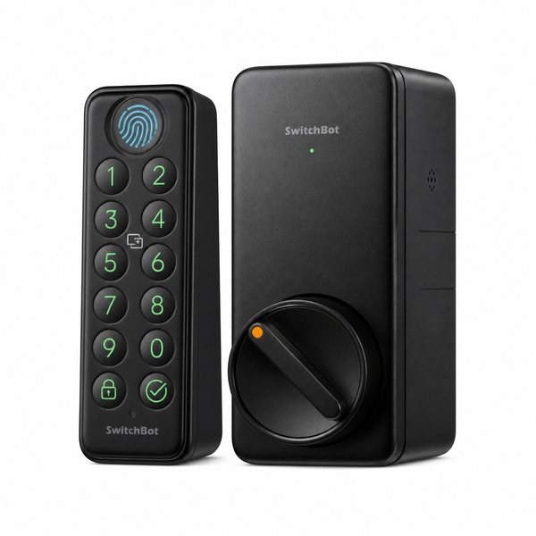
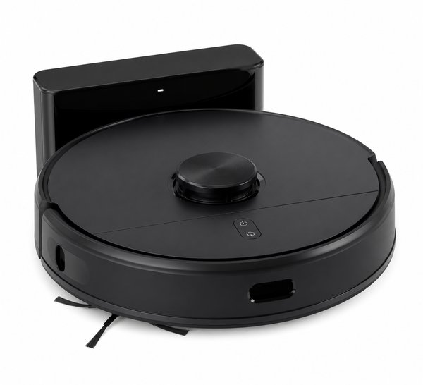
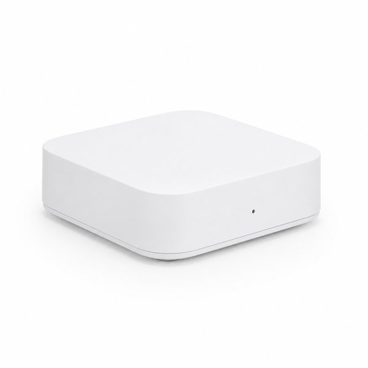
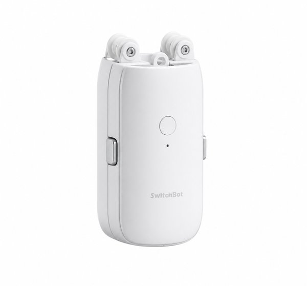
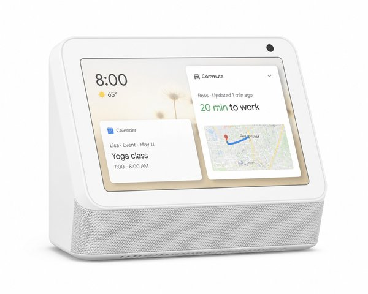
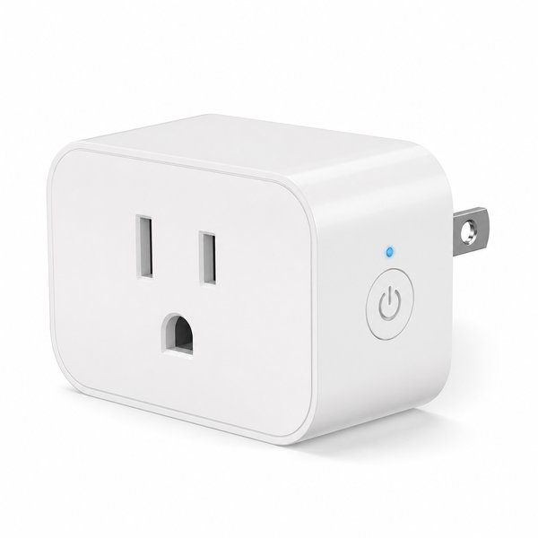
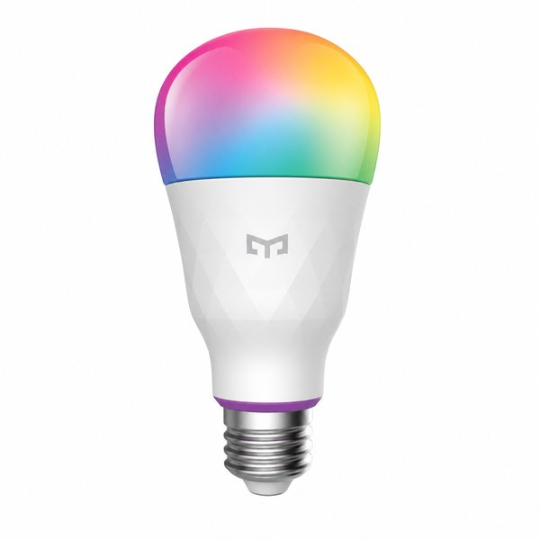
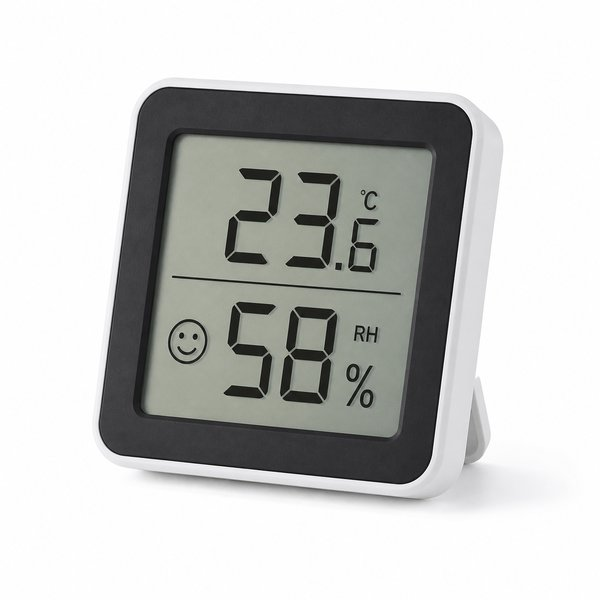
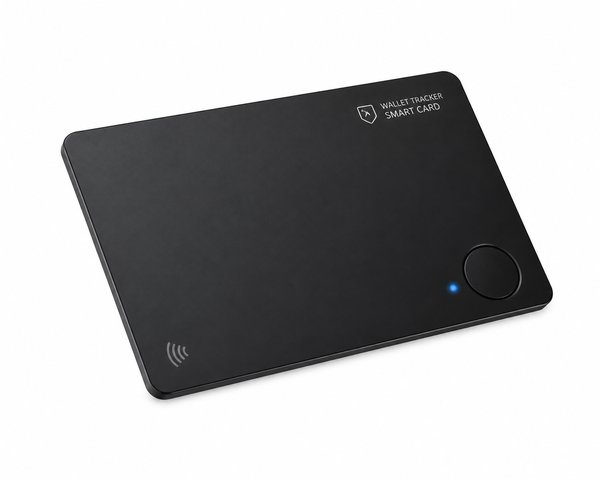
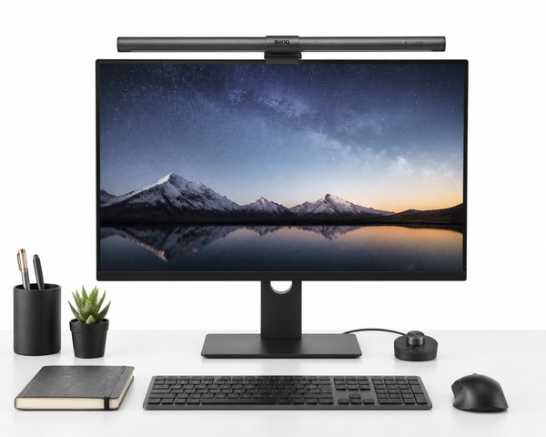

【2026年最新】失敗しないスマートホーム入門！暮らしが劇的に自動化するおすすめ家電・デバイス10選
「スマートホームに興味はあるけれど、設定が難しそう」「賃貸だから大がかりな工事はできない」と思っていませんか？
実は今のスマートホーム製品は、両面テープで貼るだけ・コンセントに挿すだけで誰でも5分で設置できるアイテムが主流です。
本記事では、賃貸住宅で暮らしをほぼ全自動化させた編集部が、「導入して生活の無駄な動作が完全に消えた！」と実感するおすすめスマートデバイス10選を分かりやすく解説します。
- 一目でわかる！おすすめ10選の比較表
- BEST 1：スマートロック プロ ＋ 指紋認証パッド セット
- BEST 2：ルンバ (Roomba) ロボット掃除機 自動充電
- BEST 3：Nature Remo mini 2 スマートリモコン スマホ操作
- BEST 4：カーテン第3代 自動開閉ロボット 静音モデル
- BEST 5：Echo Show 8 スマートディスプレイ Alexa搭載
- BEST 6：Tapo P105A スマートWi-Fiプラグ 遠隔操作
- BEST 7：スマートLED電球 フルカラー E26 口金 Bluetooth+Zigbee
- BEST 8：防水温湿度計 プラス 大画面 高精度センサー
- BEST 9：Eufy Security SmartTrack Card カード型スマートタグ
- BEST 10：ScreenBar モニター掛け式 LEDライト 自動調光
- まとめ：生活をラクにする最初の一歩
| 順位 | 商品名 | ブランド | 最大の特徴・おすすめ理由 | 総合評価 |
|---|---|---|---|---|
| 01 | スマートロック プロ ＋ 指紋認証パッド セット | SwitchBot（スイッチボット） | カバンから物理鍵を探して取り出す手間が人生から消滅 | ★★★★★ 4.9 |
| 02 | ルンバ (Roomba) ロボット掃除機 自動充電 | iRobot（アイロボット） | 週末の床掃除にかける時間が実質ゼロになり自由時間が増加 | ★★★★★ 4.8 |
| 03 | Nature Remo mini 2 スマートリモコン スマホ操作 | Nature（ネイチャー） | 家電を買い換えることなく既存のリモコン家電を即座にスマート化 | ★★★★★ 4.8 |
| 04 | カーテン第3代 自動開閉ロボット 静音モデル | SwitchBot（スイッチボット） | 朝日を浴びて起きることで体内時計が整いスッキリ起床 | ★★★★☆ 4.7 |
| 05 | Echo Show 8 スマートディスプレイ Alexa搭載 | Amazon（アマゾン） | 「アレクサ、おはよう」の一言で照明ON・エアコンON・ニュース再生 | ★★★★★ 4.8 |
| 06 | Tapo P105A スマートWi-Fiプラグ 遠隔操作 | TP-Link（ティーピーリンク） | 1個あたり1,000円台前半と非常にリーズナブルで導入しやすい | ★★★★★ 4.8 |
| 07 | スマートLED電球 フルカラー E26 口金 Bluetooth+Zigbee | Philips Hue（フィリップスヒュー） | 圧倒的な調色クオリティで部屋の雰囲気を一瞬でカフェやバー風に | ★★★★★ 4.8 |
| 08 | 防水温湿度計 プラス 大画面 高精度センサー | SwitchBot（スイッチボット） | 遠隔から部屋やペットのいる空間の温湿度をリアルタイム監視 | ★★★★★ 4.8 |
| 09 | Eufy Security SmartTrack Card カード型スマートタグ | Anker（アンカー） | 財布がパンパンに膨らまない驚異の薄さ2.4mm | ★★★★★ 4.8 |
| 10 | ScreenBar モニター掛け式 LEDライト 自動調光 | BenQ（ベンキュー） | モニター画面に光が反射せず長時間のPC作業でも目が疲れにくい | ★★★★★ 4.9 |

スマートロック プロ ＋ 指紋認証パッド セット
自宅のドアに両面テープで貼るだけで、指紋認証・パスコード・スマホ・Apple Watch・ICカードで解錠できるようになる神デバイス。オートロック機能付きで鍵のかけ忘れも完全に防ぎます。
- カバンから物理鍵を探して取り出す手間が人生から消滅
- 指をタッチするわずか1秒で解錠できる抜群の認証精度
- 工事不要で賃貸のドアにも跡を残さず取り付け可能
- 付属バッテリー（CR123A電池）の交換が約1年に1回必要

ルンバ (Roomba) ロボット掃除機 自動充電
留守中や仕事中に部屋中を自動でくまなく掃除してくれるロボット掃除機の代名詞。アプリからタイマー予約しておくだけで、帰宅した瞬間にピカピカのフローリングが迎えてくれます。
- 週末の床掃除にかける時間が実質ゼロになり自由時間が増加
- ベッドやソファの下など手が届きにくい隙間も徹底清掃
- 段差を自動検知して落下を防止する高精度センサー搭載
- 床にコード類や大きな服が散らばっていると巻き込む場合がある

Nature Remo mini 2 スマートリモコン スマホ操作
今ある古いエアコン、テレビ、照明のリモコン赤外線をこれ1台に集約できるスマートリモコン。外出先からスマホで帰宅前にエアコンをつけたり、AlexaやGoogle Homeと連携して声で操作できます。
- 家電を買い換えることなく既存のリモコン家電を即座にスマート化
- 帰宅前の電車内からエアコンを入れておけば部屋が快適な温度に
- GPS連動で「家から離れたら自動で全消灯」の設定も可能
- 赤外線が届く同一部屋内（壁のない空間）での使用が前提

カーテン第3代 自動開閉ロボット 静音モデル
既存のカーテンレールに取り付けるだけで、設定した時間に自動でカーテンを開閉してくれるロボット。朝の眩しい太陽の光で自然に目覚められるようになり、目覚まし時計の不快なアラームから解放されます。
- 朝日を浴びて起きることで体内時計が整いスッキリ起床
- 夕方に自動でカーテンを閉める設定で防犯対策にも最適
- 動作音が気にならないQuietDrift（静音モード）搭載
- 両開きカーテンを自動化するには2台設置が必要

Echo Show 8 スマートディスプレイ Alexa搭載
8インチHDタッチディスプレイを搭載したスマートスピーカー。声で家電を操作するだけでなく、天気予報・スケジュール・レシピの画面表示、Prime Video視聴、高音質な音楽再生までこなす司令塔です。
- 「アレクサ、おはよう」の一言で照明ON・エアコンON・ニュース再生
- キッチンでのタイマーセットや時計表示がひと目で分かって便利
- カメラ付きで外出先から部屋の見守りや家族との通話が可能
- 電源コード接続が必要なためコンセントの確保が必要

Tapo P105A スマートWi-Fiプラグ 遠隔操作
コンセントに挿すだけで、繋いだ家電の電源オン・オフをスマホや声で遠隔操作できるプラグ。加湿器、間接照明、サーキュレーター、スマートフォンの過充電防止タイマーなどに大活躍します。
- 1個あたり1,000円台前半と非常にリーズナブルで導入しやすい
- スケジュールタイマーで消し忘れを確実に防止して節電
- コンパクト設計で上下のコンセント穴を塞がない
- 物理スイッチがONのまま通電で作動する家電にのみ対応

スマートLED電球 フルカラー E26 口金 Bluetooth+Zigbee
1600万色の調色と調光が可能なスマート照明の最高峰。スマホや音声操作はもちろん、映画や音楽と連動したライティングや、夜になると徐々に暖色系に暗くなるオートメーションで良質な睡眠を誘います。
- 圧倒的な調色クオリティで部屋の雰囲気を一瞬でカフェやバー風に
- 朝は日の出のように徐々に明るくなり自然な目覚めをサポート
- ハブなしでBluetooth単体から手軽に使い始められる
- 一般的なLED電球と比べると1個あたりの価格がやや高い

防水温湿度計 プラス 大画面 高精度センサー
スイス製高精度センサーを搭載した見やすい大画面温湿度計。スマホから過去の温度・湿度グラフを確認できるほか、「湿度が40%を下回ったら加湿器ON」「温度が28℃を超えたらエアコンON」と完全連動できます。
- 遠隔から部屋やペットのいる空間の温湿度をリアルタイム監視
- ハブと連携してエアコンや加湿器の全自動制御が可能
- スタンド・壁掛け・マグネットの3Way設置に対応
- 外出先から見るには別売りのハブミニまたはハブ2が必要

Eufy Security SmartTrack Card カード型スマートタグ
わずか約2.4mmのクレジットカードサイズで、財布のカードポケットにスッキリ収まる紛失防止タグ。Appleの「探す」アプリに対応しており、財布を置き忘れても正確な位置を特定できます。
- 財布がパンパンに膨らまない驚異の薄さ2.4mm
- スマホから財布のタグを鳴らせる＆タグからスマホを鳴らすことも可能
- 置き忘れ通知機能で財布を置いて離れると即座にスマホに警告
- 電池交換は不可（最大約3年間使用可能）

ScreenBar モニター掛け式 LEDライト 自動調光
PCモニターの上にクリップで引っ掛けるだけで手元だけを明るく照らす革新的デスクライト。画面への光の映り込みが一切なく、机の上の作業スペースを1ミリも消費しません。
- モニター画面に光が反射せず長時間のPC作業でも目が疲れにくい
- スタンドがないため狭いデスクでも作業スペースを最大限確保
- 周囲の明るさに合わせて最適な照度に自動調整するセンサー付き
- 湾曲モニターや背面に厚みのある特殊形状モニターは適合要確認
💡 まとめ：生活をラクにする最初の一歩
「鍵を取り出す」「リモコンを探す」「電気を消して回る」といった毎日の小さな名もなき家事を手放すだけで、暮らしの自由な時間と心のゆとりが驚くほど増えます。まずは一番手軽なスマートロックから始めてみませんか？
楽天市場では「5と0のつく日」や「お買い物マラソン」などのキャンペーンに合わせて購入すると、ポイント還元が最大化してお得に手に入ります。ぜひチェックしてみてくださいね。